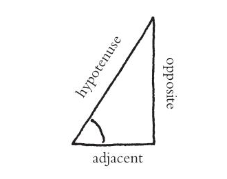
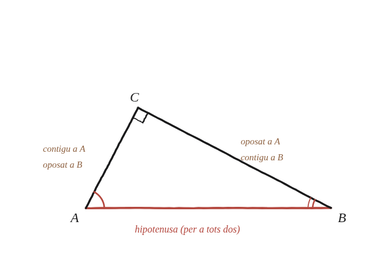

Com es relacionen entre si els sinus i els cosinus dels dos angles d'un triangle rectangle?

Dues definicions, no una
Per a un angle agut d'un triangle rectangle: sinus = costat oposat / hipotenusa; cosinus = costat contigu / hipotenusa. Amb dos angles aguts A i B en un mateix triangle rectangle (que sumen 90°, ja que el tercer és de 90°), cal veure com es relacionen els seus sinus i cosinus.
El mateix costat, dos noms diferents
Un triangle rectangle només té tres costats, i els dos angles aguts A i B els comparteixen tots dos. El costat que és "oposat" a A és exactament el mateix costat que és "contigu" a B —i el que és "contigu" a A és l'"oposat" a B. La hipotenusa és la mateixa per a tots dos angles.

Escriure-ho i comparar
sinA = oposat_a_A / hipotenusa = contigu_a_B / hipotenusa = cosB. I, de la mateixa manera, cosA = contigu_a_A / hipotenusa = oposat_a_B / hipotenusa = sinB. Les quatre raons no són quatre coses diferents: són les mateixes dues divisions, mirades des de cada angle.
sinA=cosB i cosA=sinB, perquè els dos angles aguts d'un triangle rectangle comparteixen exactament els mateixos dos catets, amb els papers d'"oposat" i "contigu" intercanviats. Com que A+B=90° sempre en un triangle rectangle, això és el mateix que dir sin(θ)=cos(90°−θ) per a qualsevol angle agut θ.
Comprovació
Triangle 3-4-5, angle A oposat al costat 3: sinA=3/5=0,6, cosA=4/5=0,8. Angle B oposat al costat 4: sinB=4/5=0,8, cosB=3/5=0,6. sinA=cosB (0,6=0,6) ✓ i cosA=sinB (0,8=0,8) ✓.